TotalCommander常规使用总结
背景
TotalCommander是一个老牌的文件管理器(下文简称：TC)。从Wikipedia首页介绍就能看出，首发版本从1993年开始到现在已经快30年。
TC的强大与震撼，确实令每位使用过或者经常使用的用户来说，非常了不起的。个人觉得，在Windows平台下，TC是最强大的文件管理器，没有之一！
另外一点，就是这是一款等同于免费的软件。
为什么说是等同于呢？实际上，如果你不付费，一种你大可寻找网上D版的授权认证，另外一种，也就是一个弹框而已，正常功能使用完全不受影响。从其它渠道了解他人对TC软件作者的采访得知，作者的对D版的态度是不反对的，完全看你自己。这一点精神，着实令我敬佩！
也正因为这点，早在很多年前（15-16年之间）就付费购买了授权认证，也从那时候开始，个人对于付费软件的态度就是：在力所能及的情况下能付费的就付费。
这么多年下来了，从早年大学时代玩的D版游戏，到后来工作之后，所有的游戏全部正版化。个人游戏平台涵盖了所有：Steam、Ubisoft、Origin、Epic都付费购买过游戏。
从使用的操作系统，Windows Professional(付费购买)、Office 365，从黑苹果、黑群晖，再到白苹果，白群晖。等等等等，太多了，无一例外，很多我也践行了我的承诺：力所能及的情况下。
这一点也正是TC软件的作者影响着我。
废话不多说~
本文主要记录一下日常使用TC过程中的一些经验、技巧相关。
前言
TC基本功能介绍
TC常规使用场景
快速定位
【快捷键】 Ctrl + D
- 打开收藏栏，收藏栏可以收藏本地文件夹 OR 本地文件、远程网站等等。
- 打开菜单后，如果是新需要添加的文件夹，直接选择“添加当前文件夹”即可。
- 新菜单文件夹弹出时：可以命名菜单名称，也可以同时命名快捷键
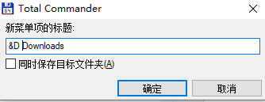
添加成功后，如果你有命名快捷键，此后的快速打开快捷键就是：Ctrl + D + [你命名的快捷键]
组合子菜单
在配置菜单中，你可以添加子菜单用于管理分类，相当于建立一个“一级目录”，如图所示：
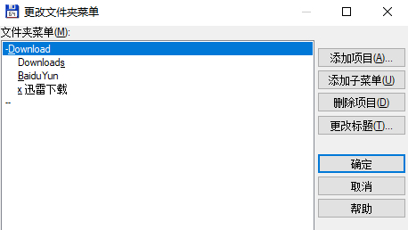
同时也可以命名快捷键，就像上图中，我要跳转到Downloads目录，组合快捷键就是：Ctrl + D + D + S
颜色管理
菜单配置路径：配置->选项->颜色
总体上可以通过组合条件设置，灵活配置各种各样规则，最终标记文件颜色。
在配置页面可以通过调整匹配顺序，设置匹配优先级，我的优先级是：时间第一，文件扩展名第二
设置完之后就是这样的
按时间
如下图所示，选择定义，在“定义选择类型”窗口中，选择“高级”选项卡，下面列举了很多场景
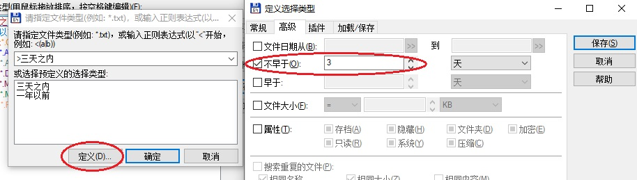
三天以内
勾选“不早于”，并选择3天。确定之后，选择红色，即用于标记：凡是三天以内修改过的，用红色标记
一年以前
勾选“早于”，并选择1年。确定之后，选择蓝色，即用于标记：凡是一年以前修改过的，用蓝色标记
按文件类型
如图所示：
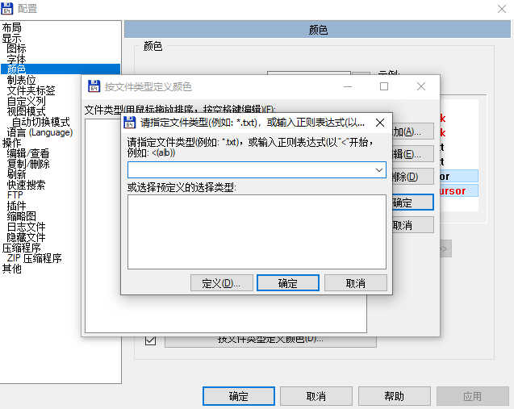
在指定文件类型输入框中，指定相应的文件类型，并且在确定之后，选择指定的一个颜色。配置好之后，在后续文件浏览的过程中，就已配置好的颜色区分开来
如下图所示，配置好的颜色
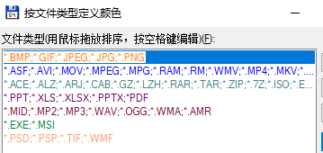
常用文件类型分类
这里提供Windows下各种文件类型分类，需要使用的直接粘贴即可
1 | 视频 |
复制 & 移动
带文件目录格式复制
场景描述
日常生活中，随着时间的推移，建多级文件夹分类管理是经常的事情。
在某些场景，你可能需要快速筛选这个文件夹下的某一类文件，如：图片。筛选过后，你可能需要copy到其它媒介，如：U盘等中。但是windows资源管理器中的搜索出的结果只能复制文件，而不能复制文件的路径，因而复制过后，你的文件分类结构就看不出来了。
就像下面这样：
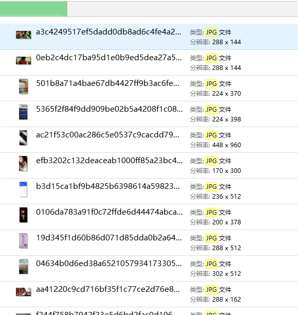
我现在需要复制文件的同时，文件所属的目录结构也要复制下来，怎么办？
需要借助的工具
TC的一款插件：TreeCopyPlus，官方插件地址（页面搜索）：https://www.ghisler.com/plugins.htm
本文附件下载：TreeCopyPlus 1.051
下载后，直接用TC打开，会有提示一路回车安装即可
使用
假设现在我要查找我本地用户文件夹下内所有的JPG图片，带文件目录结构的方式复制到另外一个目的目录下，如下图所示：
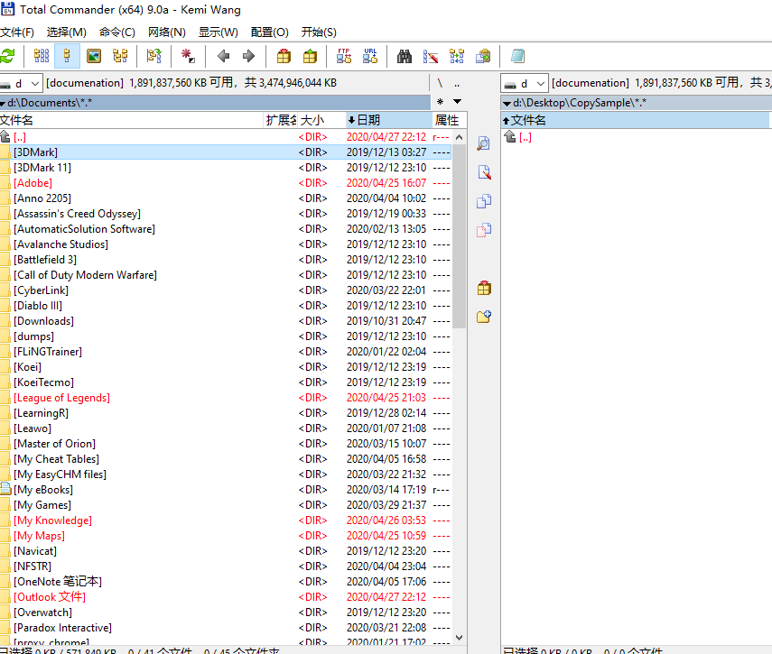
左侧为用户目录，右侧为目标路径
快捷键：F5，打开搜索框，在搜索栏位键入匹配符，如下图所示：
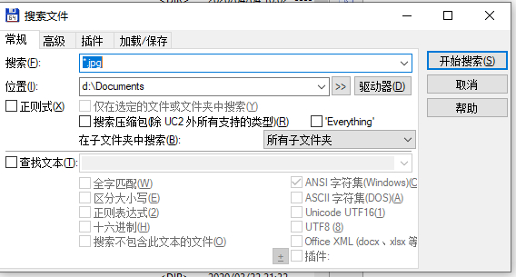
搜索完成之后，点击“输出到列表”
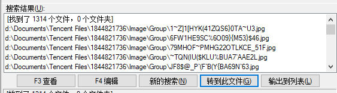
此时刚刚搜索的所有匹配的文件，会把结果输出到左侧列表中。
此时点击左侧列表：Ctrl + A全选结果后，点击：文件->压缩文件菜单（快捷键：ALT + F5）之后，弹出压缩文件窗口，默认选项如下图所示：
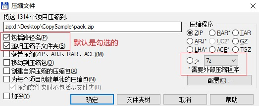
下面需要注意一下最终的选项，默认操作就如这个菜单名称所示，压缩文件。我们这里是拷贝文件，这里就需要选择使用我们刚刚安装的插件来进行拷贝。
选择“需要外部压缩程序”，下拉框中选择“TreeCopyPlus”。如下图所示：
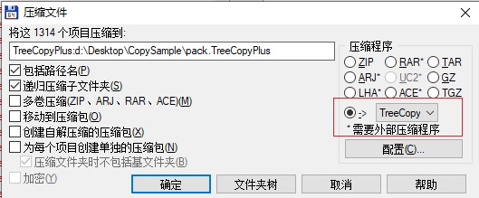
选择完成之后，如果没有其它需求，点击确认即可。
稍等片刻，完成之后，看一下目的路径下面的文件结构，是这样的：
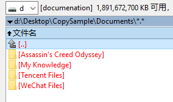
点进去一看呢？就是这样的：
很完美的解决了是不是！Excellent！